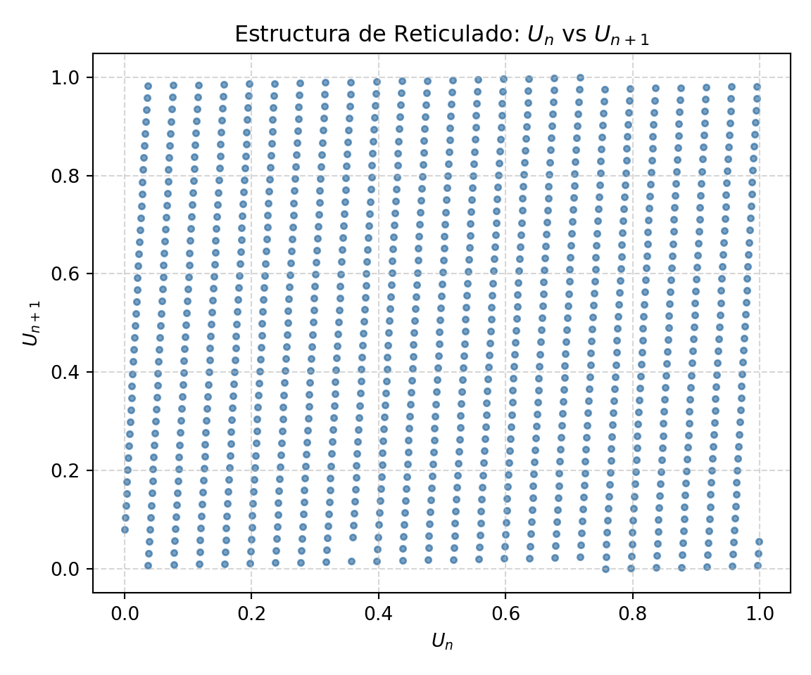

3 Problema 3
- Dado el generador congruencial de números pseudoaleatorios definido por:
\[X_{n+1} = (25 X_{n} + 81) \pmod{1024}, \qquad U_{n} := \frac{X_{n}}{1024}, \quad n \in \mathbb{N}\]
3.1 3.1. ¿Es de ciclo óptimo el siguiente generador congruencial?
3.1.1 Demostración analítica (Teorema de Hull-Dobell).
Un generador congruencial lineal de la forma \(X_{n+1} = (aX_n + c) \pmod m\) tiene período completo (\(m = 1024\)) si y solo si se verifican las tres condiciones siguientes:
El incremento \(c\) y el módulo \(m\) son primos relativos:
\[\gcd(c, m) = \gcd(81, 1024) = \gcd(3^4, 2^{10}) = 1\] Se cumple la condición.Todo factor primo de \(m\) divide a \(a - 1\):
El único factor primo de \(m = 1024 = 2^{10}\) es \(p = 2\).
\[a - 1 = 25 - 1 = 24\] Como \(24\) es divisible por \(2\) (\(2 \mid 24\)), se cumple la condición.Si \(m\) es múltiplo de 4, entonces \(a - 1\) es múltiplo de 4:
Dado que \(4 \mid 1024\), verificamos:
\[4 \mid 24\] Se cumple la condición.
Conclusión: El generador congruencial sí es de ciclo óptimo y su período es \(m = 1024\).
3.2 3.2. Tomando como semilla \(X_0 := 40\), ¿cuánto vale el valor de \(U_{51202}\)?
3.2.1 Demostración analítica.
Dado que el período completo es \(m = 1024\), los valores de la sucesión se repiten periódicamente cada \(1024\) pasos:
\[51202 \pmod{1024} = 51202 - 50 \times 1024 = 2\]
Esto implica que \(X_{51202} = X_{2}\). Calculamos paso a paso:
1. Para \(n = 0\):
\[X_1 = (25 \times 40 + 81) \pmod{1024} = 1081 \pmod{1024} = 57\]
2. Para \(n = 1\):
\[X_2 = (25 \times 57 + 81) \pmod{1024} = 1506 \pmod{1024} = 482\]
Calculando el número pseudoaleatorio normalizado:
\[U_{51202} = \frac{X_2}{1024} = \frac{482}{1024} = \frac{241}{512} = 0.470703125\]
3.3 Código de verificación y gráfico en Python.
import numpy as np
import matplotlib.pyplot as plt
a = 25
c = 81
m = 1024
x0 = 40
# Verificación de ciclo y almacenamiento de la secuencia completa
secuencia = []
visitados = set()
x = x0
while x not in visitados:
visitados.add(x)
secuencia.append(x)
x = (a * x + c) % m
periodo = len(secuencia)
print(f"Período obtenido: {periodo} (¿Óptimo?: {periodo == m})")## Período obtenido: 1024 (¿Óptimo?: True)# Cálculo exacto del término pedido
x_51202 = secuencia[51202 % m]
u_51202 = x_51202 / m
print(f"Valor de X_51202: {x_51202}")## Valor de X_51202: 482## Valor de U_51202: 0.470703125# Gráfico de dispersión de pares consecutivos (U_n vs U_{n+1})
u_secuencia = np.array(secuencia) / m
plt.figure(figsize=(6, 5))## <Figure size 600x500 with 0 Axes>## <matplotlib.collections.PathCollection object at 0x78961c085f90>## Text(0.5, 1.0, 'Estructura de Reticulado: $U_n$ vs $U_{n+1}$')## Text(0.5, 0, '$U_n$')## Text(0, 0.5, '$U_{n+1}$')